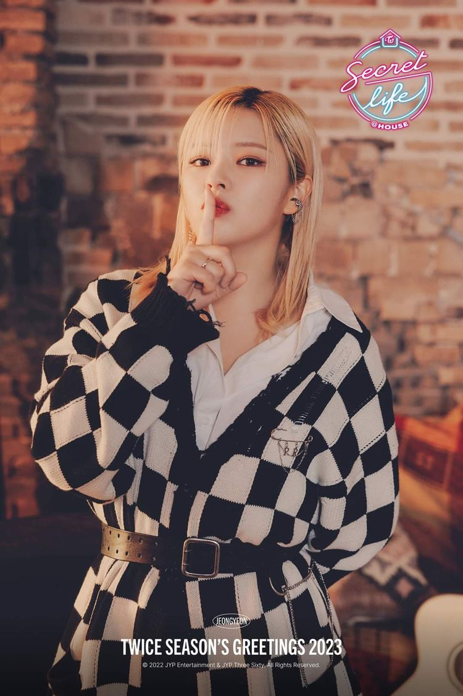
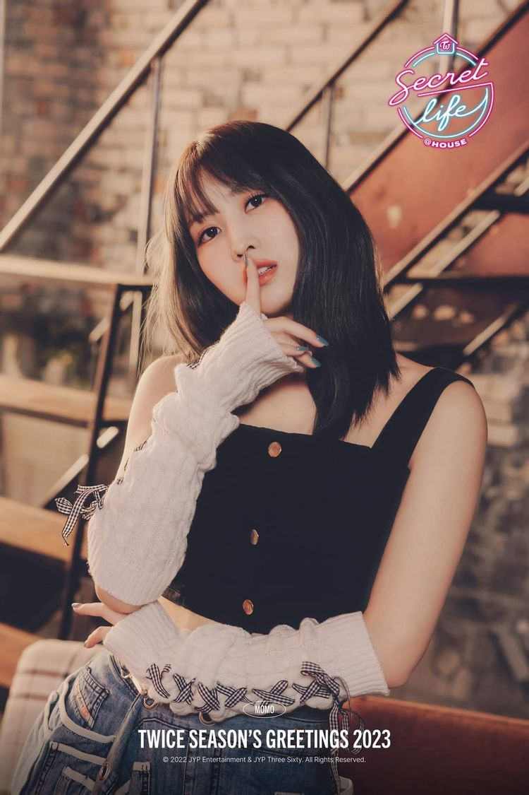
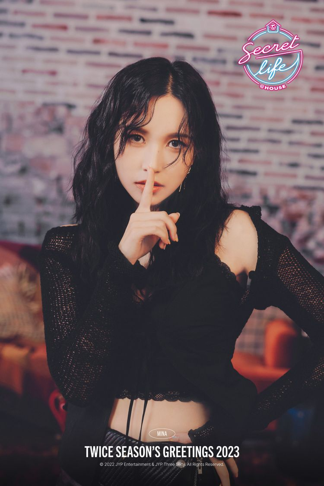
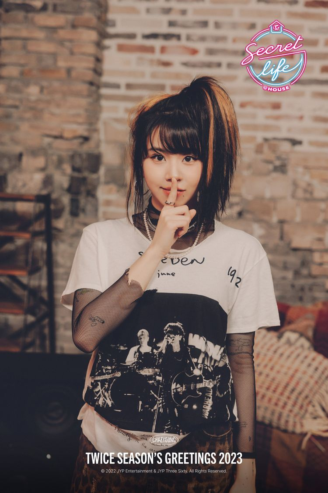

트와이스
트와이스는 한국의 9명조 걸그릅이다.

~ 멤버 ~

나연
1995/09/22
포지션은 리드보컬과 리드댄서를 맡고 있다.
정연
1996/11/01
포지션은 리드보컬을 맡고 있다.
모모
1996/11/09
포지션은 메인댄서와 서브보컬, 서브래퍼를 맡고 있다.

사나
1996/12/29
포지션은 서브보컬을 맡고 있다.

지효
1997/02/01
포지션은 리더와 메인보컬을 맡고 있다.
미나
1997/03/24
포지션은 메인댄서와 서브보컬을 맡고 있다.

다현
1998/05/28
포지션은 리드래퍼와 서브보컬을 맡고 있다.
채영
1999/04/23
포지션은 메인래퍼와 서브보컬을 맡고 있다.

쯔위
1999/06/14
포지션은 리드댄서와 서브보컬을 맡고 있다.